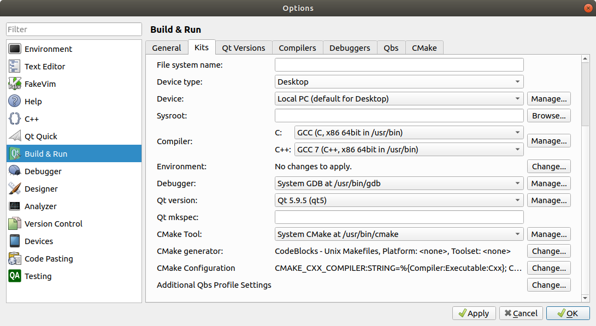

Running from QT Creator.
1. Download empty-project.zip
2. Extract it to place of your choice.
3. Start QtCreator and select open project.
4. Select empty_project.pro within the extracted directory.
5. Open that. Click Configure project
6. In the source tree. Sources/src/hello.cpp contains the sample hello.cpp (Hello world code). You can add another cpp file to this folder, but there should only be one main() functions. Just rename the one of the main() as main_old() or something of your choice.
7. Modify this file as per the lab requirements. It will be able to use all the files in the stanfordlib folder.
8. Ctrl+B to build and Ctrl+R to run. Please note that the first run will take time as it will build the library.
This section will list additional steps, as per the issues faced by students in the class
Make sure the Kit looks like this:

You might need to install some packages for this:
sudo apt install cmake